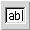

The aim of this minimal tutorial is to give an overview of wxGlade and its
functionalities: despite its very short length, it is (hopefully) complete
enough to make you understand how the application works, through a step-by-step
description of the creation of a frame containing a notebook with some
controls, a menubar and a statusbar.
Before we start, let me apologize for my English: it's not my native
language (I'm Italian), so it is very far from perfection.
To create a new frame, click on the appropriate button of the "palette"
( ): a dialog asking for the name of the class of the new
window is displayed: choose the name you prefer, but remember that it must be a
valid name for a Python (or C++) class.
): a dialog asking for the name of the class of the new
window is displayed: choose the name you prefer, but remember that it must be a
valid name for a Python (or C++) class.
Now the frame is displayed, and the properties window changes to show the
attributes of the widget just created. The first thing we'll do is change the
title of the frame, which is by default equal to the object's name, and insert
"Frame with notebook": the change takes effect when the Title property
loses focus.
Let's activate the Widget tab of the properties notebook of our frame, and check the property Has MenuBar to create a menu bar for the frame.
The properties window changes again, and now it shows the properties of the
menubar: let's click on the Edit menus button to add some menus with
the Menu Editor.
Click on the button Add to add a menu, and then edit the
Label field to change its value to "File".
Let's then add some
menu items to our File menu: click on the Add button again, change
Label to "New", and finally click the > button: after the
latter action we can see that the label of our item ("New") is indented
compared to the previous one ("File"): this says that "New" is an item of
"File".
Repeat the previous operations "ad libitum" to add other menus and
items (and sub-menus), then click OK: the window gets closed, and our
menubar contains the menus we added.
Under the Has MenuBar property of our frame there's the Has
StatusBar one: check it to add the statusbar.
The Fields property of the object just added keeps the fields to
display on the statubar: double-click on a field to edit it; to add, remove,
insert other fields use the appropriate buttons.
Edit the default field, an
set its value to "Created with wxGlade!", then add some other fields with the
Add button: the Size column shows the dimension of each
field: you can change them as you like, but remember that one of the fields
must have a size of -1 (which tells that it will fill the remaining
space).
After performing these operations, click on the Apply
button to reflect the changes on the widget.
Now it's time to add a notebook to our frame. You should have noticed that
the frame you've just added contain a BoxSizer ( ). This is because with wxGlade every container widget must have a
Sizer before you can add sub-widgets to it, and since it is very common for
frames to have just one child window, wxGlade adds an 1-slot BoxSizer
automatically for you. This doesn't happen for other containers, for which
you'll have to set their sizer manually, as will be explained below, after the
addition of the notebook to the frame.
). This is because with wxGlade every container widget must have a
Sizer before you can add sub-widgets to it, and since it is very common for
frames to have just one child window, wxGlade adds an 1-slot BoxSizer
automatically for you. This doesn't happen for other containers, for which
you'll have to set their sizer manually, as will be explained below, after the
addition of the notebook to the frame.
Let's add such notebook, then: to do so, click on the Notebook button ( ) on the palette: now when you move the mouse inside the sizer's area
(), the pointer changes its shape and becomes a cross:
this tells us that we can drop the notebook on the sizer's only slot.
) on the palette: now when you move the mouse inside the sizer's area
(), the pointer changes its shape and becomes a cross:
this tells us that we can drop the notebook on the sizer's only slot.
A
left-click starts the operation, and a dialog asking for the placement of the
notebook's tabs appears: choose what you like best.
Now let's select the Common tab of the properties of the object just added: we can see that the Class property's value is wxNotebook, i.e. the name of the class our object is an instance of. If we change such value, we can make our notebook an instance of a custom class derived from wxNotebook: this has no effect during the creation of the app, but it changes the generated code, so that a definition for our custom class will be written. Let's change then the value of Class to MyNotebook, to make wxGlade generate the code for the custom class.
NOTE: The above is true only for "container" widgets, i.e. those that
can have children. For controls, instead, the meaning is slightly different;
let me illustrate it with an example.
Suppose you have a button inside a panel, its Class is wxButton. If you change such value to MyCustomButton, wxGlade assumes that you have a subclass of wxButton called MyCustomButton defined somewhere, and that such class has a costructor compatible with that of the "regular" wxButton, and so when it generates the code for the object, it writes:button_1 = MyCustomButton(parent, id, "Label")instead ofbutton_1 = wxButton(parent, id, "Label")
NOTE 2: For XRC output, if the value of Class is different from the default one, the object will have a subclass attribute. For the example above, the code generated would be:
<object class="wxButton" name="button_1" subclass="MyCustomButton"/>
This means that you should be a little careful with XRC output, in that you have to remember to reset the Class value to the default one when adding a "top-level" widget (frame, dialog,...), because by default wxGlade assumes they are custom classes.
This operation is almost identical to the handling of statusbar fields: the
Tabs property of our notebook controls the number of pages (tabs) and
their labels (don't forget to "Apply" the changes!).
We have now reached the last part of this short tutorial: the addition
of some controls to the first page of our notebook. In particular, we'll add
a text area and two buttons: these operations will allow us to show the layout
options of the objects inside sizers, and the cut &
paste support of wxGlade.
As said before, the first thing to do in order to add widgets to a container
is to set its sizer. Let's start with the addition of a sizer to the first
page of the notebook, which is where we are going to put our controls, then: to
do so, click on the BoxSizer button ( ) on the palette, and
then move the mouse inside the page. Again, the pointer is now a cross, and so
we can drop the sizer on our page: if everything is OK, you should see a dialog
asking for some features of the sizer to add. We have to change the default
values, since we want a 2-slots vertical box, so set to Vertical the
orientation and to 2 the number of slots. None of the two actions is mandatory,
since both the orientation (or better, the type) of the sizer and the number of
slots can be changed in any moment: the former by changing the value of the
Class property, the latter from the popup menu you can activate with a
right-click on the "handle" button of the sizer or on the corresponding node of
the tree of widgets. (As a side note, this same procedure can be used to show
the menu of almost every object handled by wxGlade).
) on the palette, and
then move the mouse inside the page. Again, the pointer is now a cross, and so
we can drop the sizer on our page: if everything is OK, you should see a dialog
asking for some features of the sizer to add. We have to change the default
values, since we want a 2-slots vertical box, so set to Vertical the
orientation and to 2 the number of slots. None of the two actions is mandatory,
since both the orientation (or better, the type) of the sizer and the number of
slots can be changed in any moment: the former by changing the value of the
Class property, the latter from the popup menu you can activate with a
right-click on the "handle" button of the sizer or on the corresponding node of
the tree of widgets. (As a side note, this same procedure can be used to show
the menu of almost every object handled by wxGlade).
6.1 Text area
Let's click on the TextCtrl button () and insert the text area in the first slot of our sizer.
The default dimension isn't right, as we want to display a long and multiline text: to edit the layout, let's select the Layout tab of the TextCtrl's properties, and set to 1 the value of Option and to wxEXPAND that of Alignment. To make the text area multiline, let's check the wxTE_MULTILINE checkbox of the Style property (in the Widget tab): as with almost every Style property in wxGlade, such change has no visible effect, but it changes the generated code.
6.2 Buttons
Now replace the second slot with a horizontal Sizer which will contain our
two buttons: set the number of slots to 3, to leave room for a spacer to insert
between the two buttons (so as they won't appear too close to each other).
Replace then the first slot with a new button, as usually with the
approprate button ().
To add the second button, instead, we will use the
clipboard: let's click on the Copy item of the popup menu of the first
button (or select it and press Ctrl+C), then move the mouse inside the
third slot, and finally click on the Paste item of the popup menu of
the slot to paste the copied widget (again, you can alternatively left-click on
the empty slot and then press Ctrl+V, or if you have a 3-buttons mouse
just click on the empty slot with the middle button).
Now add a spacer ( ) of the appropriate dimension between the
buttons, to keep them at a reasonable distance.
) of the appropriate dimension between the
buttons, to keep them at a reasonable distance.
Finally, the last operation we have to do is to edit the layout of the
horizontal Sizer that contains the buttons: set to 0 the value of "Option",
uncheck wxEXPAND from Aligment and check
wxALIGN_CENTER_HORIZONTAL, and set a border (4) on the top
(wxTOP) and bottom (wxBOTTOM), to keep the buttons separate
from the text area and the notebook lower border.
NOTE on widgets' ids: You certainly know that every wxWindows widget
has an id, used among other things for event handling, so in wxGlade each
widget has an Id property. This may have the following values:
Now we can go on with the code generation: select the Application
item on the tree of widgets (it is the root) to make the Application
tab appear on the properties window. This panel contains the options for the
code generation:
After the selection of the various options as described above, click on the
Generate code button: if everything is OK, after a while a message box
appears: this says that the operation is over... like this short tutorial
;-)
This section contains a list of things that you should know about wxGlade (known bugs and/or limitations, "hidden" features, tips and tricks, ...) which I wasn't able to fit in the tutorial . The list is loosely sorted by importance.
# begin wxGlade: ... # end wxGladeblock. This is a desirable feature in most occasions, since it lets you add your code to the file without worrying of losing it when re-generating the GUI code, but there are situations in which a little attention is required. In particular, you should be aware of the following:
#!/usr/bin/env python
# generated by wxGlade 0.2 on Sat Dec 14 15:15:06 2002
from wxPython.wx import *
class MyFrame(wxFrame):
def __init__(self, *args, **kwds):
# begin wxGlade: MyFrame.__init__
kwds["style"] = wxDEFAULT_FRAME_STYLE
wxFrame.__init__(self, *args, **kwds)
self.__set_properties()
self.__do_layout()
# end wxGlade
def __set_properties(self):
# begin wxGlade: MyFrame.__set_properties
self.SetTitle("frame_1")
# end wxGlade
def __do_layout(self):
# begin wxGlade: MyFrame.__do_layout
pass
# end wxGlade
# end of class MyFrame
Now suppose you rename MyFrame to RenamedFrame. If you
don't care to fix frame.py accordingly, if you re-generate it you
will get something like:
#!/usr/bin/env python
# generated by wxGlade 0.2 on Sat Dec 14 15:15:06 2002
from wxPython.wx import *
class RenamedFrame(wxFrame):
def __init__(self, *args, **kwds):
# begin wxGlade: RenamedFrame.__init__
kwds["style"] = wxDEFAULT_FRAME_STYLE
wxFrame.__init__(self, *args, **kwds)
self.__set_properties()
self.__do_layout()
# end wxGlade
def __set_properties(self):
# begin wxGlade: RenamedFrame.__set_properties
self.SetTitle("frame_1")
# end wxGlade
def __do_layout(self):
# begin wxGlade: RenamedFrame.__do_layout
pass
# end wxGlade
# end of class RenamedFrame
class MyFrame(wxFrame):
def __init__(self, *args, **kwds):
# content of this block not found: did you rename this class?
pass
def __set_properties(self):
# content of this block not found: did you rename this class?
pass
def __do_layout(self):
# content of this block not found: did you rename this class?
pass
# end of class MyFrame
which is clearly not what you intended.As of version 0.3, it is possible to turn off this "update contents" feature, by checking the "Overwrite existing sources" property of the Application: if the property value is True, wxGlade will always re-generate the code from scratch (performing the appropriate backups, according to the preferences you can set from View->Preferences->Other).
<!-- code generator for wxStatusBar objects not available -->
 ). This is different from the others because it can be
used to include in a wxg file any widget, even if it is not directly
supported by wxGlade. The key feature for this is the Arguments property,
which has two different meanings: for Python or C++ output, it lets you
define the constructor parameters for the object. In this case it has two
special parameters, $parent and $id, which as you can guess
by their names are placeholders for the actual parent and id of the
object. For XRC output, instead, it lets you specify additional properties of
the object. In this case each entry should be in the form
). This is different from the others because it can be
used to include in a wxg file any widget, even if it is not directly
supported by wxGlade. The key feature for this is the Arguments property,
which has two different meanings: for Python or C++ output, it lets you
define the constructor parameters for the object. In this case it has two
special parameters, $parent and $id, which as you can guess
by their names are placeholders for the actual parent and id of the
object. For XRC output, instead, it lets you specify additional properties of
the object. In this case each entry should be in the form
name: value(invalid entries will be silently ignored): for each of these lines, the output will contain a
<name>value</name>property of the XRC object.
python xrc2wxg.py xrc_file.xrc wxg_file.wxg(if wxg_file.wxg is omitted, it defaults to xrc_file.wxg), but there are some limitations you should be aware of:
python wxglade.py -hat your shell's prompt.
I hope the contents are clear (and my English not too ridicule),
anyway for questions, comments, critics you can contact the
wxGlade mailing list.
Alberto Griggio